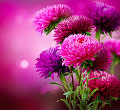

ऍस्टर विषयी माहिती

प्रस्तावना
ऍस्टर हे हंगामी फुलपीक असून त्यामध्ये पांढऱ्या, लाल, गुलाबी, जांभळ्या रंगाची फुले विशेषतः आढळतात. ऍस्टरची लागवड
संपूर्ण देशात तसेच राज्यात मोठमोठ्या शहरांच्या भोवती केली जाते.
ऍस्टरची फुले फुलदाणीत सजावटीसाठी तसेच हारांमध्ये
वापरली जातात. ऍस्टरची फुले व कट फ्लावर म्हंणून तसेच विविध धार्मिक कार्यक्रमांमध्ये वापरली जातात. बगीच्यामध्ये
रस्त्यालगत तसेच कुंड्यांमध्ये ऍस्टरची लागवड केली जाते.
हवामान व जमीन
ऍस्टर हे मुख्यत्वे करून थंड हवामानाचे पिक असुन त्याची लागवड वर्षातील तिन्ही हंगामात केली जाते. थंड हवामानात
ऍस्टरची वाढ चांगली होते व फुलांचा दर्जा देखील चांगला असतो.
या पिकास भरपूर सूर्यप्रकाश आवश्यक असतो. उन्हाळी
हंगामात जास्त तापमान वाढल्यास वाजवीपेक्षा जास्त दांडा निपजतो व फुलांचा दर्जा देखील चांगला नसतो. जास्तीत जास्त
दर्जेदार फुले मिळण्यासाठी बियाण्याची रोपासाठी पेरणी सप्टेंबर / ऑक्टोबर महिन्यात करावी.
ऍस्टरची लागवड निरनिराळ्या जमिनीमध्ये करतात. परंतु पाण्याचा उत्तम निचरा होणारी मध्यम ते भारी जमीन या पिकास चांगली
मानवते. काळी कसदार भारी व पाण्याचा निचरा न होणाऱ्या जमिनीत रोपांची मर मोठया प्रमाणावर होते. निकास आणि हलक्या
जमिनीत पिकाची वाढ खुंटते.
जाती
ऍस्टरच्या पिकाची वर्गवारी ही झाडाची वाढीची सवय, फुलांचा आकार पाकळ्यांची संख्या व पाकळ्यांची ठेवण यानुसार केली
जाते. ऍस्टरच्या वाढीनुसार त्यांचे उंच वाढणाऱ्या (७० ते ९० सें. मी.) मध्यम उंचीच्या (४० ते ६० सें. मी.) व बुटक्या
(२० ते ४० सें. मी.) याप्रमाणे प्रकार पडतात.
अ) बॅंगलोर येथील भारतीय फलोत्पादन संशोधन संस्था (आय. आय. एच. आर. ) यांनी विकसित केलेल्या जाती:- १) कामिनी २)
पौर्णिमा ३) शशांक ४) व्हायलेट कुशन
ब) प्रादेशिक फळसंशोधन केंद्र, गणेशखिंड यांनी विकसित केलेल्या जाती:- १) फुले गणेश पिंक २) फुले गणेश परपल ३) फुले
गणेश व्हाईट
क) परदेशी जाती:- १) ड्वार्फ क्विन २) पिनॅचिओ ३) अमेरिकन ब्युटी ४) स्टार डस्ट ५) जायंट ऑफ कॅलिफोर्निया ६) सुपर
प्रिन्सेस
लागवड
ऍस्टर या पिकाची बियाण्याद्वारे करण्यात येते. बियाण्याची पेरणी केल्यानंतर ७ ते ८ दिवसांत बियाण्याची उगवण सुरु
होते. बियाणाच्या उत्कृष्ट उगवणीसाठी सुमारे २० ते ३० से. इतक्या तापमानाची आवश्यकता असते. ऍस्टरच्या बियाण्यास
विश्रांती कालावधी नसल्याने बियाणे फुलातून काढल्यानंतर ताबडतोब पेरले तरी उगवते.
लागवडीपूर्व तयारी
लागवडीपूर्वी जमिनीची २ वेळा खोल नांगरट करावी व २ ते 3 वेळा फणनी करावी. धसकटे व हरळीच्या काशा वेचून घेऊन जमीन
स्वच्छ करावी. हेक्टरी २० ते २५ मे. टन शेणखत जमिनीत चांगले मिसळून घ्यावे.
शेणखताबरोबरच प्रति हेक्टरी ९० कि. नत्र,
१२० कि. स्फुरद व ६० कि. पालाश जमिनीत चांगले मिसळून घ्यावे व नंतर ६० सें. मी. अंतरावर सरी वरंबे तयार करावेत.
त्यानंतर सऱ्यांची नाके तोडून पाणी पुरवठ्याच्या सोयीनुसार वाफे करून घ्यावेत.
लागवड
महाराष्ट्रात जमिनी चांगल्या मध्यम / भारी असल्यामुळे सरी वरम्ब्यावरच लागवड करावी. ऍस्टरची लागवड ६० X ३० सें. मी.
किंवा ४५ X ३० सें. मी. अंतरावर करतात.
सरी वरंबा पद्धतीने लागवड करताना वरंब्याच्या मध्यभागी लागवड करावी. रोपांची
लागवड सायंकाळी ४ वाजेनंतर व भरपूर पाण्यात करावी, म्हणजे रोपांची मर होणार नाही.
पाणी
ऍस्टर पिकास करावयाचा पाणीपुरवठा मुख्यत्वे जमिनीचा प्रकार, वातावरण व हंगाम यावर अवलंबून असतो. ऍस्टर पिकाच्या
मुळ्या जास्त नसल्यामुळे लागवड केलेले वरंबे नेहमी वापसा अवस्थेत राहतील याची काळजी घेणे जरुरी आहे.
साधारणपणे ऍस्टर
पिकास ८ ते १० दिवसाच्या अंतराने पाणी दयावे. ऍस्टर पिकास कळ्या येऊ लागल्यानंतर फुले येईपर्यंत पाण्याच्या ताण देऊ
नये. अन्यथा फुलांच्या उत्पादनावर त्याचा विपरीत परिणाम होतो.
पीक संरक्षण
ऍस्टर या पिकावर मुख्यत्वे मावा, नागअळी, काळी पोखरणारी अळी, खोड पोखरणारी अळी या किडींचा व मर, मूळ कुजवा या
रोगांचा प्रादुर्भाव दिसून येतो.
वरील किद्ल व रोगांपासून ऍस्टर या पिकाचे संरक्षण करण्यासाठी पुढीलपैकी कोणतेही एक
किटकनाशक / बुरशीनाशक घेऊन त्यात १५ मि. ली./ १० लिटर पाणी या प्रमाणात स्टिकर्स मिसळावे व वारा शांत असताना शक्यतो
सकाळी १०.०० पूर्वी किंवा सायंकाळी ४.०० नंतर फवारणी करावी.
फुलांची काढणी व उत्पादन
ऍस्टरची लागवड केल्यानंतर १० ते १२ आठवड्यांनी फुले तोडणीसाठी तयार होतात. ऍस्टरच्या फुलाची तोडणी दोन प्रकारे केली
जाते. एक प्रकार म्हणजे पूजेसाठी किंवा सजावटीसाठी पूर्ण उमललेली फुले तोडली जातात व दुसरा प्रकार म्हणजे काही
प्रमाणात फुले उमलल्यानंतर पूर्ण झाडच जमिनी वर छाटले जाते.
फक्त फुलांची तोडणी करावयाची झाल्यास सकाळी लवकर तोडणी करावी व पूर्ण झाड फुलदांडयासाठी वापरायचे असल्यास सायंकाळी
झाड छाटून ताबडतोब स्वच्छ पाण्यामध्ये ठेवावे.
ऍस्टरची लागवड करतांना शिफारसीनुसार सर्व लागवड पद्धतींची अंमलबजावणी केल्यास १२ ते १५ मे. टन प्रति हेक्टर
याप्रमाणे उत्पादन मिळते.
हे लक्षात ठेवा
रोपे तयार करताना पाण्याचा निचरा होणाऱ्या जागीच गादी वाफ्यांवर रोपे तयार करा व सुदृढ रोपेच लागवडीसाठी निवडा.
पाण्याचा निचरा न होणारी जमीन ऍस्टर लागवडीसाठी निवडू नका.
कळी लागल्यापासून फुले येईपर्यंत पाण्याचा ताण पडू देऊ नका.